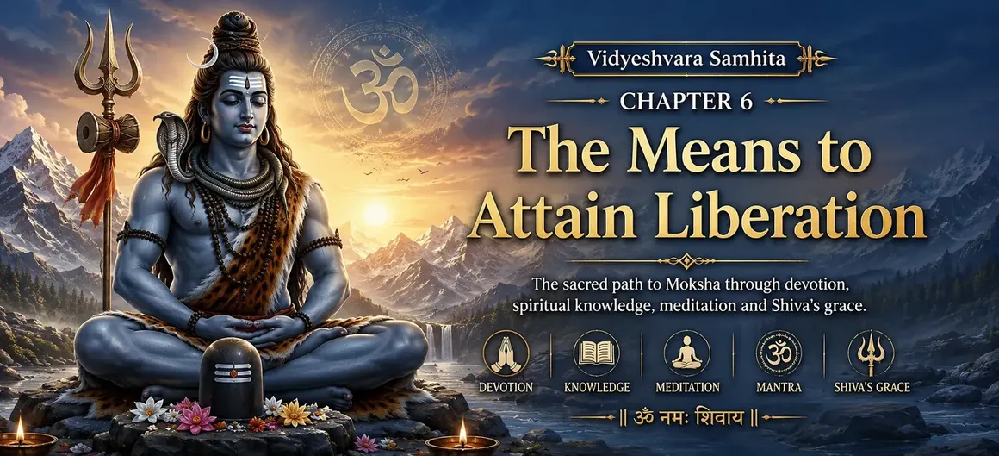

📖 Read the Sacred Shiva Purana Online • Har Har Mahadev 🔱
📖 পবিত্র শিব পুরাণ পাঠ করুন • হর হর মহাদেব 🔱

Chapter 6 → The Means to Attain Liberation
অধ্যায় ৬ → মোক্ষ লাভের উপায়
After learning that Moksha is the highest goal of human life, the sages naturally ask how liberation can be attained. Merely knowing about Moksha is not enough; one must understand the path that leads to it.
In this chapter, Suta Maharshi explains the means of attaining liberation according to the sacred teachings of Lord Shiva. He reveals that freedom from worldly bondage is achieved through devotion, spiritual knowledge, righteous conduct and constant remembrance of Mahadev.
The sages learn that liberation is not reserved for a select few. Every sincere devotee who follows the path of Shiva with faith, discipline and purity of heart can gradually move toward the ultimate goal of Moksha.
মোক্ষ মানবজীবনের সর্বোচ্চ লক্ষ্য বলে জানার পর ঋষিগণ স্বাভাবিকভাবেই জানতে চান কীভাবে সেই মুক্তি লাভ করা যায়। কেবল মোক্ষ সম্পর্কে জানা যথেষ্ট নয়; তার জন্য প্রয়োজন সেই পথের জ্ঞান যা মানুষকে মুক্তির দিকে নিয়ে যায়।
এই অধ্যায়ে সূত মহর্ষি ভগবান শিবের পবিত্র শিক্ষার ভিত্তিতে মোক্ষ লাভের উপায় ব্যাখ্যা করেন। তিনি জানান যে ভক্তি, আধ্যাত্মিক জ্ঞান, সৎ আচরণ এবং মহাদেবের নিরন্তর স্মরণের মাধ্যমে মানুষ সংসারবন্ধন থেকে মুক্ত হতে পারে।
ঋষিগণ শিক্ষা লাভ করেন যে মোক্ষ কেবল অল্প কয়েকজনের জন্য নয়। যে কোনো আন্তরিক ভক্ত বিশ্বাস, শৃঙ্খলা এবং পবিত্র হৃদয় নিয়ে শিবের পথ অনুসরণ করলে ধীরে ধীরে মুক্তির দিকে অগ্রসর হতে পারে।
The Path to Liberation
মুক্তির পথ
🙏
Bhakti (Devotion)
ভক্তি
Loving devotion to Lord Shiva purifies the heart and removes worldly attachments.
ভগবান শিবের প্রতি প্রেমময় ভক্তি হৃদয়কে পবিত্র করে এবং জাগতিক আসক্তি দূর করে।
📖
Jnana (Knowledge)
জ্ঞান
Spiritual wisdom helps devotees understand the true nature of the soul and the Supreme Reality.
আধ্যাত্মিক জ্ঞান মানুষকে আত্মার প্রকৃত স্বরূপ এবং পরম সত্য উপলব্ধি করতে সাহায্য করে।
🧘
Meditation
ধ্যান
Meditating on Lord Shiva calms the mind and gradually leads the soul toward liberation.
ভগবান শিবের ধ্যান মনকে শান্ত করে এবং ধীরে ধীরে আত্মাকে মুক্তির দিকে পরিচালিত করে।
🕉️
Sacred Mantra
পবিত্র মন্ত্র
The chanting of "Om Namah Shivaya" is praised as a powerful means of attaining spiritual purification.
"ওঁ নমঃ শিবায়" জপকে আত্মশুদ্ধি ও মুক্তিলাভের এক শক্তিশালী উপায় হিসেবে বর্ণনা করা হয়েছে।
Why Devotion to Shiva Leads to Moksha
শিবভক্তি কেন মোক্ষের পথে নিয়ে যায়
Suta Maharshi explains that devotion to Lord Shiva is among the most direct and powerful paths to liberation. When a devotee sincerely worships Shiva, listens to His glories, chants His sacred names and meditates upon Him, the impurities of the mind gradually disappear.
The Shiva Purana teaches that devotion and spiritual knowledge are not separate paths but complementary ones. True devotion awakens wisdom, and wisdom deepens devotion. Through the grace of Mahadev, devotees overcome ignorance, attachment and fear, which are the primary causes of worldly bondage.
Therefore, constant remembrance of Lord Shiva becomes a bridge between the individual soul and the Supreme Reality. A heart filled with devotion naturally moves toward liberation.
সূত মহর্ষি ব্যাখ্যা করেন যে ভগবান শিবের প্রতি ভক্তি মোক্ষলাভের অন্যতম সহজ এবং শক্তিশালী পথ। যখন একজন ভক্ত আন্তরিকভাবে শিবের উপাসনা করেন, তাঁর মাহাত্ম্য শ্রবণ করেন, পবিত্র নাম জপ করেন এবং ধ্যান করেন, তখন মনের অশুদ্ধতা ধীরে ধীরে দূর হতে থাকে।
শিব পুরাণ শিক্ষা দেয় যে ভক্তি ও আধ্যাত্মিক জ্ঞান আলাদা পথ নয়; বরং তারা একে অপরের পরিপূরক। প্রকৃত ভক্তি জ্ঞানকে জাগ্রত করে এবং জ্ঞান ভক্তিকে আরও গভীর করে। মহাদেবের কৃপায় ভক্ত অজ্ঞতা, আসক্তি ও ভয়কে অতিক্রম করতে সক্ষম হন, যা সংসারবন্ধনের প্রধান কারণ।
এই কারণে ভগবান শিবের নিরন্তর স্মরণ ব্যক্তিগত আত্মা এবং পরম সত্যের মধ্যে এক সেতুবন্ধন সৃষ্টি করে। ভক্তিতে পূর্ণ হৃদয় স্বাভাবিকভাবেই মুক্তির দিকে অগ্রসর হয়।
The Three Essential Practices
মুক্তিলাভের জন্য তিনটি প্রধান সাধনা
📖
Shravana (Listening)
শ্রবণ
Listening to the stories, teachings and glories of Lord Shiva purifies the mind and strengthens faith.
ভগবান শিবের কাহিনী, শিক্ষা এবং মাহাত্ম্য শ্রবণ করলে মন পবিত্র হয় এবং বিশ্বাস দৃঢ় হয়।
🎶
Kirtana (Chanting)
কীর্তন ও জপ
Chanting Shiva's names and praising Him with devotion gradually removes ignorance and attachment.
ভক্তিভরে শিবনাম জপ ও কীর্তন করলে অজ্ঞতা ও আসক্তি ধীরে ধীরে দূর হয়।
🧘
Dhyana (Meditation)
ধ্যান
Meditation on the form and nature of Lord Shiva helps the devotee attain inner peace and spiritual realization.
ভগবান শিবের রূপ ও তত্ত্বের ধ্যান ভক্তকে অন্তরের শান্তি এবং আধ্যাত্মিক উপলব্ধির দিকে নিয়ে যায়।
Obstacles on the Path to Liberation
মোক্ষের পথে বাধাসমূহ
🌫️
Ignorance (Avidya)
অজ্ঞতা (অবিদ্যা)
Not knowing the true nature of the soul causes people to remain trapped in worldly suffering.
আত্মার প্রকৃত স্বরূপ সম্পর্কে অজ্ঞতা মানুষকে সংসারের দুঃখে আবদ্ধ রাখে।
⛓️
Attachment (Moha)
আসক্তি (মোহ)
Excessive attachment to people, possessions and worldly pleasures prevents spiritual growth.
মানুষ, সম্পদ ও জাগতিক ভোগের প্রতি অতিরিক্ত আসক্তি আধ্যাত্মিক উন্নতিতে বাধা সৃষ্টি করে।
👑
Ego (Ahankara)
অহংকার
Pride and the false belief that one is separate from the Divine keep the soul bound.
অহংকার এবং নিজেকে পরমাত্মা থেকে পৃথক ভাবার ভ্রান্ত ধারণা আত্মাকে বদ্ধ রাখে।
🔥
Endless Desires
অন্তহীন কামনা
Uncontrolled desires create restlessness and keep the mind focused on temporary pleasures.
নিয়ন্ত্রণহীন কামনা মানুষের মনকে অস্থির করে এবং ক্ষণস্থায়ী সুখের দিকে আকৃষ্ট রাখে।
The Grace of Lord Shiva
ভগবান শিবের কৃপা
🔱
Suta Maharshi teaches that spiritual effort is essential, but the grace of Lord Shiva is equally important on the path to liberation. Devotees may practice devotion, meditation, self-discipline and sacred study, yet it is the compassionate grace of Mahadev that ultimately removes the final veil of ignorance.
Just as the sun naturally dispels darkness, Shiva's divine grace destroys the obstacles that bind the soul to worldly existence. A sincere devotee who remembers Shiva with faith and humility receives inner strength, wisdom and spiritual guidance.
Therefore, the chapter teaches that liberation is not attained through pride or personal achievement alone. It blossoms through sincere effort combined with complete surrender to Lord Shiva.
সূত মহর্ষি শিক্ষা দেন যে আধ্যাত্মিক সাধনা অত্যন্ত গুরুত্বপূর্ণ, কিন্তু মোক্ষের পথে ভগবান শিবের কৃপাও সমানভাবে প্রয়োজন। ভক্ত ভক্তি, ধ্যান, আত্মসংযম এবং শাস্ত্র অধ্যয়ন করতে পারে, কিন্তু শেষ পর্যন্ত মহাদেবের করুণাই অজ্ঞতার শেষ আবরণ দূর করে।
যেমন সূর্য স্বাভাবিকভাবে অন্ধকার দূর করে, তেমনই শিবের দিব্য কৃপা আত্মাকে সংসারবন্ধনে আবদ্ধ করে রাখা সকল বাধা দূর করে। যে ভক্ত বিশ্বাস ও বিনয়ের সঙ্গে মহাদেবকে স্মরণ করে, সে অন্তরের শক্তি, জ্ঞান এবং আধ্যাত্মিক পথনির্দেশ লাভ করে।
অতএব এই অধ্যায় শিক্ষা দেয় যে মোক্ষ কেবল ব্যক্তিগত কৃতিত্ব বা অহংকারের মাধ্যমে অর্জিত হয় না। আন্তরিক সাধনা এবং ভগবান শিবের প্রতি সম্পূর্ণ আত্মসমর্পণের মাধ্যমেই মুক্তি প্রস্ফুটিত হয়।
"Through devotion, knowledge and the grace of Lord Shiva, the soul crosses the ocean of worldly existence and attains eternal liberation."
"ভক্তি, জ্ঞান এবং ভগবান শিবের কৃপায় আত্মা সংসারসমুদ্র অতিক্রম করে চিরন্তন মুক্তি লাভ করে।"
Chapter Summary
অধ্যায়ের সারাংশ
In this chapter, Suta Maharshi explains the means of attaining Moksha, the highest goal of human life. He teaches that liberation is achieved through devotion to Lord Shiva, spiritual knowledge, meditation, chanting of sacred mantras and righteous living.
The sages learn that ignorance, attachment, ego and uncontrolled desires are the main obstacles on the spiritual path. By practicing devotion and receiving the grace of Mahadev, devotees gradually overcome these obstacles and move toward liberation.
The chapter emphasizes that sincere effort combined with Shiva's divine grace leads the soul to eternal peace and freedom from the cycle of birth and death.
এই অধ্যায়ে সূত মহর্ষি মানবজীবনের সর্বোচ্চ লক্ষ্য মোক্ষ লাভের উপায় ব্যাখ্যা করেন। তিনি শিক্ষা দেন যে ভগবান শিবের প্রতি ভক্তি, আধ্যাত্মিক জ্ঞান, ধ্যান, পবিত্র মন্ত্রজপ এবং ন্যায়পরায়ণ জীবনযাপনের মাধ্যমে মুক্তি অর্জন করা যায়।
ঋষিগণ জানতে পারেন যে অজ্ঞতা, আসক্তি, অহংকার এবং নিয়ন্ত্রণহীন কামনা আধ্যাত্মিক পথের প্রধান বাধা। ভক্তি ও মহাদেবের কৃপায় ভক্ত ধীরে ধীরে এই বাধাগুলি অতিক্রম করে মুক্তির দিকে অগ্রসর হয়।
অধ্যায়টি জোর দিয়ে বলে যে আন্তরিক সাধনা এবং শিবের দিব্য কৃপা আত্মাকে জন্ম-মৃত্যুর চক্র থেকে মুক্ত করে চিরন্তন শান্তির দিকে নিয়ে যায়।
Main Teachings of the Chapter
অধ্যায়ের প্রধান শিক্ষা
🙏
Devotion Leads to Liberation
ভক্তি মুক্তির পথ
Sincere devotion to Lord Shiva purifies the heart and guides the soul toward Moksha.
ভগবান শিবের প্রতি আন্তরিক ভক্তি হৃদয়কে পবিত্র করে এবং আত্মাকে মোক্ষের দিকে পরিচালিত করে।
📖
Knowledge Removes Ignorance
জ্ঞান অজ্ঞতা দূর করে
Spiritual wisdom helps devotees realize their true nature and the Supreme Reality.
আধ্যাত্মিক জ্ঞান ভক্তকে আত্মার প্রকৃত স্বরূপ এবং পরম সত্য উপলব্ধি করতে সাহায্য করে।
🧘
Meditation Brings Peace
ধ্যান শান্তি প্রদান করে
Meditation on Lord Shiva calms the mind and strengthens spiritual awareness.
ভগবান শিবের ধ্যান মনকে শান্ত করে এবং আধ্যাত্মিক চেতনা বৃদ্ধি করে।
🔱
Shiva's Grace is Essential
শিবের কৃপা অপরিহার্য
Divine grace helps devotees overcome obstacles and attain liberation.
মহাদেবের কৃপা ভক্তকে বাধা অতিক্রম করে মুক্তি লাভে সহায়তা করে।
Important Characters
গুরুত্বপূর্ণ চরিত্র
📿
Suta Maharshi
সূত মহর্ষি
🙏
The Sages
ঋষিগণ
🔱
Lord Shiva
ভগবান শিব
Did You Know?
আপনি কি জানেন?
The sacred mantra "Om Namah Shivaya" is known as the Panchakshari Mantra. Shiva scriptures praise it as one of the most powerful mantras for spiritual purification and liberation. Millions of devotees continue to chant it daily as an expression of devotion to Mahadev.
"ওঁ নমঃ শিবায়" মন্ত্রটি পঞ্চাক্ষরী মন্ত্র নামে পরিচিত। শিবশাস্ত্রে এটিকে আত্মশুদ্ধি ও মোক্ষলাভের অন্যতম শক্তিশালী মন্ত্র হিসেবে প্রশংসা করা হয়েছে। আজও লক্ষ লক্ষ ভক্ত প্রতিদিন ভগবান শিবের প্রতি ভক্তি প্রকাশের জন্য এই মন্ত্র জপ করেন।
What Happens Next?
পরবর্তী অধ্যায়ে কী ঘটবে?
Having understood the means of attaining liberation, the sages continue their inquiry into the deeper truths of spiritual life. In the next chapter, they seek further knowledge regarding the nature of Lord Shiva, devotion and the path that leads the soul ever closer to the Supreme Reality.
মোক্ষলাভের উপায় সম্পর্কে জানার পর ঋষিগণ আধ্যাত্মিক জীবনের আরও গভীর সত্য সম্পর্কে জানতে আগ্রহী হন। পরবর্তী অধ্যায়ে তারা ভগবান শিবের প্রকৃত স্বরূপ, ভক্তি এবং আত্মাকে পরম সত্যের নিকটবর্তী করে এমন পথ সম্পর্কে আরও জ্ঞান অনুসন্ধান করবেন।
Moksha is liberation from the cycle of birth, death and rebirth. It is the highest spiritual goal and leads to eternal peace.
মোক্ষ হলো জন্ম, মৃত্যু এবং পুনর্জন্মের চক্র থেকে মুক্তি। এটি সর্বোচ্চ আধ্যাত্মিক লক্ষ্য এবং চিরন্তন শান্তির দিকে নিয়ে যায়।
② How can a devotee attain liberation?
② একজন ভক্ত কীভাবে মোক্ষ লাভ করতে পারেন?
Through devotion to Lord Shiva, spiritual knowledge, meditation, righteous living and the grace of Mahadev.
ভগবান শিবের প্রতি ভক্তি, আধ্যাত্মিক জ্ঞান, ধ্যান, সৎ জীবনযাপন এবং মহাদেবের কৃপা দ্বারা মোক্ষ লাভ করা যায়।
③ What are the main obstacles to liberation?
③ মোক্ষলাভের প্রধান বাধাগুলি কী?
Ignorance, attachment, ego and uncontrolled desires are the primary obstacles on the spiritual path.
অজ্ঞতা, আসক্তি, অহংকার এবং নিয়ন্ত্রণহীন কামনা আধ্যাত্মিক পথের প্রধান বাধা।
Even sincere spiritual effort becomes fruitful through the compassionate grace of Lord Shiva, which removes the final barriers to liberation.
আন্তরিক সাধনাও ভগবান শিবের করুণাময় কৃপায় সফল হয়, যা মুক্তির পথে শেষ বাধাগুলিকে দূর করে।
Continue Your Sacred Journey
আপনার পবিত্র যাত্রা অব্যাহত রাখুন
Explore the previous and next chapters of Vidyeshvara Samhita.
বিদ্যেশ্বর সংহিতার পূর্ববর্তী ও পরবর্তী অধ্যায় পাঠ করুন।